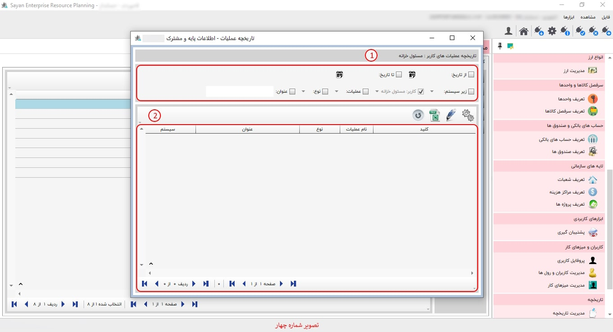
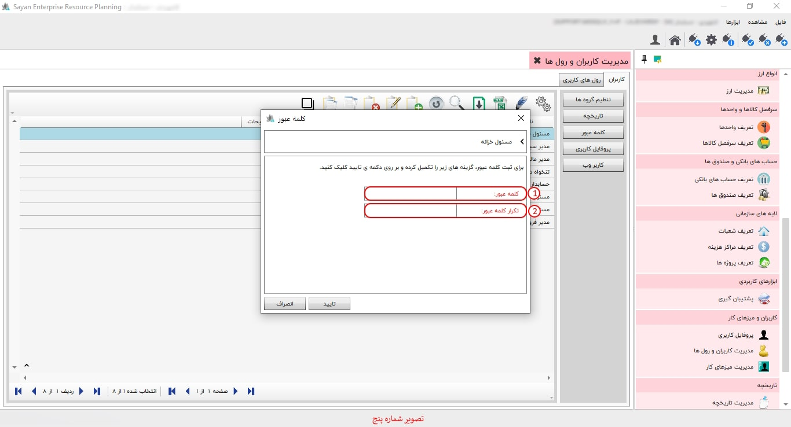
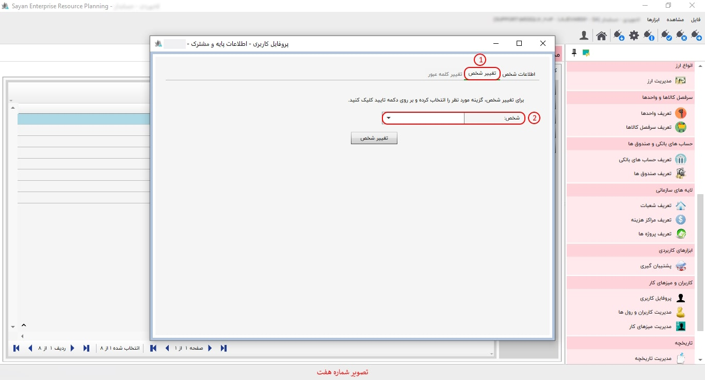

برای اعمال تنظیمات « مدیریت کابران و رول ها»، ابتدا بر روی دکمه «تنظیم کاربران کلیک کنید». همانطور که مشاهده می کنید، امکان نمایش و انتخاب « انواع رول ها» در این تصویر وجود دارد. شما می توانید بر حسب نیاز رول های کاربریتان را در حالت انتخاب قرار دهید.
برای ادامه مطلب به تصویر شماره دو مراجعه نمایید.
-کاربران(کادر شماره یک) :این بخش به شما این امکان را میدهد که کاربران مورد نظر خود را تعریف کرده، در صورت نیاز آنها را ویرایش کرده و همچنین مشاهده کنید.
-تنظیم گروه ها(|کادر شماره دو):
-تاریخچه(کادر شماره سه):این بخش به شما این امکان را میدهد که تاریخچه کاربرانی که ایجاد یا ویرایش شدهاند را مشاهده کنید.
-کلمه عبور(کادر شماره چهار):در این آیتم، از طریق مدیر سیستم امکان تغییر یا ایجاد کلمه عبور برای کاربرانتان فراهم است.
-پروفایل کاربری(کادر شماره پنج):در این بخش شما میتوانید نام کاربری یا کلمه عبور مورد نظر خود را تغییر دهید.
-کاربر وب(کادر شماره شش):
-کادر شماره هفت:در این بخش تمامی کاربرهایی که تعریف کرده اید را میتوانید مشاهده کنید.
برای ادامه مطلب به عکس شماره سوم مراجعه نمایید.

-تنظیم گروه ها(کادر شماره یک) :
-کادر شماره دو:
برای ادامه مطلب به عکس شماره چهارم ماجعه نمایید.
-کادر شماره یک:
-کادر شماره دو:
برای ادامه مطلب به عکس شماره پنجم مراجعه نمایید.
-کلمه عبور(کادر شماره یک):
-تکرار کلمه عبور (کادر شماره دو) :
برای ادامه مطلب به عکس شماره شش مراجعه نمایید.

-اطلاعات اشخاص(کادر شماره یک):در این قسمت اطلاعات اشخاص کاربر مورد نظر خود را وارد نمایید.
برای ادامه مطلب به تصویر شماره هفت مراجعه نمایید.
-تغییر شخص (کادر شماره یک):
-شخص(کادر شماره دو) :

آدرس ایمیل(کادر شماره یک):
-تلفن همراه (کادر شماره دو):
برای ادامه مطلب به تصویر شماره نهم مراجعه نمایید.
-رول های کاربری(کادر شماره یک):
-کادر شماره دو:
برای ادامه مطلب به تصویر شماره دهم مراجعه نمایید.

-مدیر مالی (کادر شماره یک):